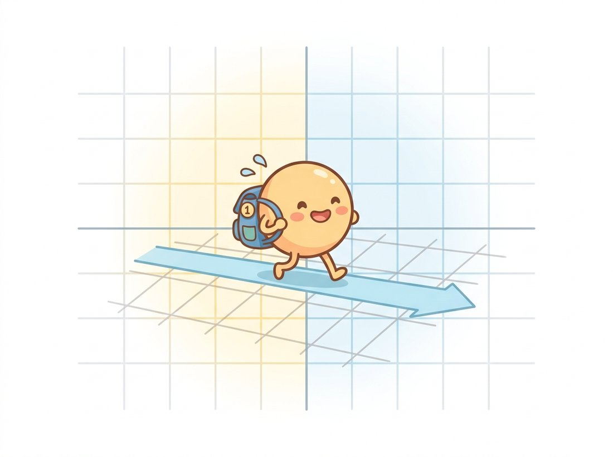

"Two coordinates were never enough for me. I carry a third one everywhere, purely so that moving house counts as linear algebra."
A Homogeneous Coordinate Awaiting Normalization
Appending a single extra coordinate to every point turns all five transformation families of Section 5.1 into plain 3×3 matrix multiplication, so that composing warps becomes multiplying matrices and undoing a warp becomes inverting one. This bookkeeping trick, homogeneous coordinates, is the reason graphics pipelines, OpenCV, and every camera-geometry paper you will ever read speak fluent matrix algebra instead of juggling case-by-case formulas.
In the previous section we cataloged the planar transformations and noted, almost in passing, that four of the five families fit a $2 \times 3$ matrix while the homography demanded $3 \times 3$. Now we explain the pattern properly. The payoff is immediate and practical: by the end of this section you will compose rotation-about-a-point from primitives, chain an arbitrary sequence of warps into a single matrix, and understand why doing so produces visibly sharper images than warping step by step.
1. The Problem: Translation Is Not Linear Beginner
A function $f$ is linear when $f(a\mathbf{p} + b\mathbf{q}) = a f(\mathbf{p}) + b f(\mathbf{q})$. Rotation and scaling pass this test; that is why they can be written as $2 \times 2$ matrices. Translation fails it instantly: if $f(\mathbf{p}) = \mathbf{p} + \mathbf{t}$, then $f(\mathbf{0}) = \mathbf{t} \neq \mathbf{0}$, and a linear map must send the origin to the origin. So in ordinary Cartesian coordinates, the innocent-looking "shift by $(t_x, t_y)$" cannot be a matrix, and any pipeline mixing rotations (matrices) with translations (additions) ends up with the awkward form $\mathbf{p}' = A\mathbf{p} + \mathbf{t}$, which composes clumsily: chaining two such maps gives $A_2 A_1 \mathbf{p} + A_2 \mathbf{t}_1 + \mathbf{t}_2$, and after five of them you are hand-deriving sums of products of matrices applied to offsets.
The fix is almost insultingly simple. Represent the 2D point $(x, y)$ as the 3-vector $(x, y, 1)$. Then translation becomes a matrix:

The third row is pure bookkeeping: it carries the constant 1 through the multiplication so the offsets $t_x, t_y$ in the third column have something to multiply. With this one change, every family from Section 5.1 becomes a $3 \times 3$ matrix: rotations and scales occupy the top-left $2 \times 2$ block, translations the top-right column, and the homography finally gets to use the bottom row. One representation, one composition rule, one inversion rule.
2. Homogeneous Coordinates Properly Intermediate
The construction generalizes beyond a bolted-on 1. A homogeneous representation of the 2D point $(x, y)$ is any triple $(wx, wy, w)$ with $w \neq 0$. The triples $(2, 3, 1)$, $(4, 6, 2)$, and $(-2, -3, -1)$ all name the same point $(2, 3)$: homogeneous coordinates are defined only up to scale. To convert back to Cartesian coordinates, divide by the last component:
$$ (X, Y, W) \;\longmapsto\; \left(\frac{X}{W}, \frac{Y}{W}\right) $$This division is exactly the denominator in the homography formulas of Section 5.1. An affine matrix has bottom row $(0, 0, 1)$, so $W$ stays 1 and the division is a no-op. A projective matrix has a nontrivial bottom row, so $W$ varies across the image, and the division is where all the perspective comes from. The five-family hierarchy is just a statement about which entries of a $3 \times 3$ matrix are allowed to be nonzero.
And what of triples with $W = 0$? The point $(X, Y, 0)$ is the limit of $(X/\epsilon,\, Y/\epsilon)$ as $\epsilon \to 0$: a point infinitely far away in direction $(X, Y)$. These points at infinity are not a pathology; they are the formal home of vanishing points. Each family of parallel lines in the world shares one point at infinity, and a homography can map it to a finite pixel: that pixel is the vanishing point where the railroad tracks visually meet. An affine transform, with bottom row $(0,0,1)$, always maps $W=0$ to $W=0$: it keeps infinity at infinity, which is precisely why affine maps preserve parallelism. A two-line calculation you will do in Exercise 5.2.1 turns this from slogan into proof.
Every drop of perspective foreshortening in every photograph traces back to a single arithmetic operation: dividing by $W$. Matrix multiplication is linear and cannot make distant things smaller; the projective division can and does. When you meet the full pinhole camera in Chapter 12, it will be a $3 \times 4$ matrix followed by the same divide-by-$W$. Learn to spot that division; it is the exact line where geometry stops being linear.
3. Composition: Matrices All the Way Down Intermediate
With every transform a $3 \times 3$ matrix, applying transform $M_1$ then $M_2$ to a point $\mathbf{p}$ is $M_2 (M_1 \mathbf{p}) = (M_2 M_1)\, \mathbf{p}$. Composition of warps is multiplication of matrices, with two consequences you will use daily:
- Order matters. Matrix multiplication does not commute, and neither do transforms: rotate-then-translate parks the image somewhere quite different from translate-then-rotate. The matrix nearest the point vector acts first; read chains right to left.
- Chains collapse. Any pipeline of N warps multiplies into a single matrix before touching any pixels. One resampling pass instead of N, which is faster and, as we will quantify below, visibly sharper.
The canonical worked example is the most common geometric operation in any photo app: rotate the image about its own center. The primitive rotation matrix spins points about the origin, which for images is the top-left corner; used naively it swings most of the image out of frame. The recipe is the classic conjugation sandwich: translate the center $\mathbf{c}$ to the origin, rotate, translate back:
$$ M \;=\; T(\mathbf{c})\; R(\theta)\; T(-\mathbf{c}) $$Figure 5.2.1 traces the three steps. Conjugation patterns like $T A T^{-1}$ ("move to a convenient frame, act, move back") recur throughout vision and robotics; this is the first of many you will meet.
4. The Toolkit in Code Intermediate
Let us build the primitive matrices and the conjugation sandwich from scratch. The NumPy idioms here (matrix literals, the @ operator) were covered in Chapter 0; the coordinate conventions, with $x$ running right and $y$ running down in image space, in Chapter 1. The downward $y$-axis means a "counterclockwise" mathematical rotation appears clockwise on screen, a perennial source of off-by-a-sign bugs.
# Factory functions for the primitive 3x3 homogeneous transforms, then
# the translate-rotate-translate sandwich that rotates about an arbitrary
# point. Homogeneous coordinates let all three compose by plain @.
import numpy as np
def translate(tx, ty):
return np.array([[1.0, 0.0, tx],
[0.0, 1.0, ty],
[0.0, 0.0, 1.0]])
def rotate(theta_deg):
t = np.deg2rad(theta_deg)
c, s = np.cos(t), np.sin(t)
return np.array([[c, -s, 0.0],
[s, c, 0.0],
[0.0, 0.0, 1.0]])
def scale(sx, sy):
return np.array([[sx, 0.0, 0.0],
[0.0, sy, 0.0],
[0.0, 0.0, 1.0]])
# Rotate 30 degrees about the point (320, 240): the conjugation sandwich.
cx, cy = 320, 240
M = translate(cx, cy) @ rotate(30) @ translate(-cx, -cy)
print(M.round(3))
# Apply to a point: homogenize, multiply, dehomogenize.
p = np.array([400.0, 240.0, 1.0])
q = M @ p
print("(%.1f, %.1f)" % (q[0] / q[2], q[1] / q[2]))
[[ 0.866 -0.5 162.871] [ 0.5 0.866 -127.846] [ 0. 0. 1. ]] (389.3, 280.0)
Order sensitivity deserves a demonstration rather than a warning label. Swap the factors and watch the same point land somewhere else entirely:
# Demonstrate that transform composition does not commute: the same two
# factors in opposite orders send the origin to two different points.
# Remember the chain acts right to left (matrix nearest the point first).
A = rotate(30) @ translate(100, 0) # translate first, then rotate
B = translate(100, 0) @ rotate(30) # rotate first, then translate
p = np.array([0.0, 0.0, 1.0]) # the origin
for name, M in [("R @ T", A), ("T @ R", B)]:
q = M @ p
print(name, "sends origin to (%.1f, %.1f)" % (q[0], q[1]))
R @ T sends origin to (86.6, 50.0) T @ R sends origin to (100.0, 0.0)
R @ T the translation happens first, so the origin moves to $(100, 0)$ and is then rotated to $(86.6, 50)$. In T @ R the rotation spins the origin in place (doing nothing) and the translation then moves it to $(100, 0)$.
Inversion is equally mechanical: undoing transform $M$ means applying $M^{-1}$, and for every family in the hierarchy the inverse stays within the family (the group-closure property from Section 5.1). In practice you rarely call np.linalg.inv on a full chain; you invert the factors and reverse their order, $(AB)^{-1} = B^{-1}A^{-1}$, which is numerically tidier and often free because the factors have closed-form inverses: $T(\mathbf{t})^{-1} = T(-\mathbf{t})$, $R(\theta)^{-1} = R(-\theta)$, $S(s_x, s_y)^{-1} = S(1/s_x, 1/s_y)$.
5. Why You Compose First and Warp Once Advanced
Collapsing a chain into one matrix is not just elegance; it is image quality. Every time you materialize an intermediate warped image, you resample it, and every resampling is a small low-pass filter (we will see exactly why in Section 5.3; it is the same blur-accumulation logic you met with repeated smoothing in Chapter 3). Chain five warps naively and you have blurred your image five times. Compose the five matrices and warp once, and you pay the interpolation tax exactly once:
# Apply a five-step warp two ways: naively (resample after every step)
# versus composing the matrices first and resampling once. PSNR between
# the results quantifies the blur the naive chain accumulates.
import cv2
img = cv2.imread("poster.jpg")
h, w = img.shape[:2]
steps = [rotate(10), scale(1.15, 1.15), translate(12, -8),
rotate(-4), translate(-5, 20)]
# Naive: materialize every intermediate image (5 resamplings).
out_naive = img.copy()
for M in steps:
out_naive = cv2.warpAffine(out_naive, M[:2], (w, h))
# Composed: multiply matrices, resample once.
M_total = np.eye(3)
for M in steps:
M_total = M @ M_total # later steps multiply on the left
out_once = cv2.warpAffine(img, M_total[:2], (w, h))
psnr = cv2.PSNR(out_naive, out_once)
print(f"PSNR between the two results: {psnr:.1f} dB")
M[:2] slice drops the constant bottom row, since warpAffine wants the 2×3 form.PSNR between the two results: 31.7 dB
Two recurring bugs live in this code pattern. First, accumulating with M_total = M_total @ M instead of M @ M_total silently applies your steps in reverse order; for non-commuting transforms that is a different warp, not a cosmetic difference. Second, OpenCV's affine API consumes 2×3 matrices: passing a full 3×3 to warpAffine raises an error, while truncating a genuine homography (nonzero bottom row) to 2×3 silently discards the perspective instead of failing. When in doubt, keep everything 3×3 until the final call.
The translate-rotate-translate sandwich plus an optional uniform scale is so common that OpenCV ships it as a single call, collapsing our three factory functions and a double matrix product (about 12 lines) into 1:
# OpenCV packages the whole rotate-about-a-point sandwich (with optional
# uniform scale) into one factory call that returns the ready 2x3 matrix.
M = cv2.getRotationMatrix2D(center=(320, 240), angle=30, scale=1.0)
# Identical (up to float rounding) to (translate(c) @ rotate(30) @ translate(-c))[:2]
Internally it builds exactly the conjugation product, handles the image $y$-down convention, and returns the 2×3 slice ready for warpAffine. When transforms must be batched on GPU and differentiated through, Kornia provides the same factory as kornia.geometry.transform.get_rotation_matrix2d operating on whole tensors of centers and angles at once.
Who: A mobile engineer at a furniture retailer building an AR "view it in your room" feature.
Situation: Each frame, the app receives the phone's pose and must place a sofa image into the camera view through a chain of transforms: model-to-anchor, anchor-to-world, world-to-camera, camera-to-screen.
Problem: The sofa jittered and slowly drifted off its anchor point. The developer had been updating the chain by multiplying each frame's pose delta on the wrong side of the accumulated matrix, applying world-frame increments as if they were local-frame increments.
Decision: The team rewrote the pipeline to keep every matrix in a named frame convention (T_screen_from_camera @ T_camera_from_world @ T_world_from_anchor), with the rule that a matrix's name must read "destination from source" and adjacent names must match.
Result: The drift vanished. The convention made wrong-side multiplications visibly ungrammatical in code review: a T_world_from_anchor @ T_camera_from_world simply does not type-check by name.
Lesson: Non-commutativity is not an exam trick; it is a production bug class. Naming frames, and reading products right to left, is the cheapest defense.
6. A Glimpse Beyond the Plane Advanced
Everything in this section scales up. 3D points get a fourth coordinate $(x, y, z, 1)$ and $4 \times 4$ matrices; the perspective camera of Chapter 12 is a $3 \times 4$ matrix mapping homogeneous 3D to homogeneous 2D, followed by the now-familiar division by $W$. The pose chains of structure-from-motion in Chapter 14 are exactly the named-frame products from the practical example above, with rotation matrices living on a curved manifold that requires care when averaging or optimizing. The homogeneous habit you build here, append the coordinate, multiply, divide at the very end, is the single most reusable skill in geometric vision.
Homogeneous coordinates were introduced by August Ferdinand Möbius in 1827 (yes, the strip person) as "barycentric coordinates", literally weights you would place at a triangle's corners so its balance point lands on your point. The graphics industry rediscovered the formalism 140 years later because it let 1960s flight simulators do rotation, translation, and perspective with one matrix multiply per vertex; it has been the native language of every GPU ever since.
The 3×3 matrix is no longer just applied; it is learned through. Kornia 0.7+ (2024) ships a liegroup module with differentiable $SO(2)$, $SE(2)$, $SO(3)$, and $SE(3)$ types, so gradient descent can optimize rotations without leaving the rotation manifold. PyPose (Wang et al., CVPR 2023; actively extended through 2025) builds full Lie-group optimization (including Levenberg-Marquardt on manifolds) into PyTorch tensors, powering learned SLAM and registration research. And GeoCalib (Veicht et al., ECCV 2024) recovers a camera's focal length and gravity direction from a single image by embedding exactly this kind of geometric optimization as a differentiable layer inside a deep network. The lesson of the decade: the matrices stayed; backpropagation moved in.
We can now describe any planar transform and manipulate it algebraically. But a matrix only tells each pixel where to go; transformed coordinates land between grid points essentially always. Deciding what color value lives at a fractional coordinate is the interpolation problem, and it is the subject of Section 5.3.
Let $A$ be any affine matrix (bottom row $(0, 0, 1)$) and let $\mathbf{d} = (d_x, d_y, 0)$ be a point at infinity. (a) Compute $A\mathbf{d}$ and show its last coordinate is still 0. (b) Explain in one paragraph why this single computation proves that affine transforms preserve parallelism. (c) Exhibit a specific homography $H$ and direction $\mathbf{d}$ such that $H\mathbf{d}$ has nonzero last coordinate, and interpret the resulting finite point visually.
Extend the factory collection of Code 5.2.1 with shear(kx, ky) and reflect_x() (reflection across the horizontal axis). Compose a transform that reflects an image across the line $y = x \tan(20°)$ passing through the image center, using only your factories and conjugation. Verify on a test image with cv2.warpAffine, and check numerically that your composite matrix has determinant $-1$ in its top-left 2×2 block. What does the sign of that determinant tell you about any transform?
Numerically compare rotate(360/100) applied 100 times by repeated matrix multiplication against the single matrix rotate(360) (which should be the identity). Measure the Frobenius-norm error (the Frobenius norm is the square root of the sum of the squared entries of a matrix, the natural matrix analogue of vector length) as a function of step count for 10, 100, 10,000, and 1,000,000 steps in float64 and float32. Then repeat the experiment at the image level: warp an image by 1 degree 360 times versus composing first, and report PSNR against the original. Relate your findings to why visual-odometry systems (Chapter 14 material) periodically re-orthonormalize their rotation matrices.